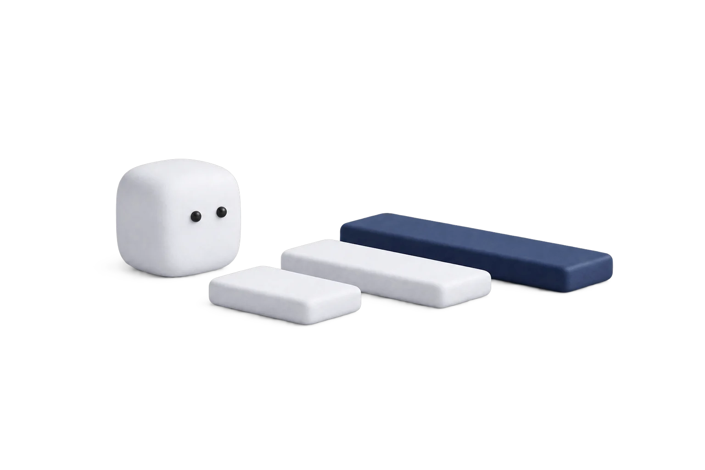
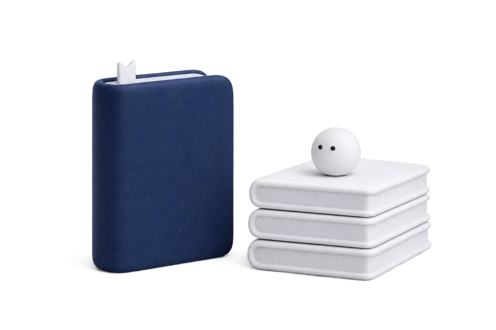

Почитать
Длинные тексты из практики: как устроена работа с ИИ, что говорит закон, какие сервисы чего стоят. У каждого текста дата проверки фактов.
Серия «Как я работаю с ИИ»
Как собрать свой ИИ-сетап
Модели, агенты, IDE и ADE. Что с чем соединить, где работать и что держать в запасе.
ЧитатьРазбор · Как я работаю с ИИ · №2 · 7 минут · проверено 27.11.2026Роли агентов: проверяющий, тестировщик, выпускающий
Как я раздал агентам три роли и где провёл черту: что агент делает сам, а где ждёт моего «да».
Читать
Разбор · Как я работаю с ИИ · №3 · 7 минут · проверено 27.11.2026Субагенты: как я делю работу между несколькими агентами
Когда задачу стоит дробить, как написать поручение, чтобы отчёт можно было проверить, и как свести три отчёта в один. На примере вычитки 28 заданий.
ЧитатьРазбор · Как я работаю с ИИ · №4 · 7 минут · проверено 27.11.2026Память между сессиями: как агент не начинает с нуля
Четыре места, где у меня живёт память агентов: журнал сессий, Каркас, правила проекта и память самого агента. Что куда писать и как это повторить.
ЧитатьРазбор · Как я работаю с ИИ · №5 · 7 минут · проверено 27.11.202632 иллюстрации за ночь: пакетная генерация через Codex
Как я переделал весь набор картинок сайта из керамики в пластилин: проба, ТЗ, образцы стиля, пакетный прогон агентом и отбор.
ЧитатьРазбор · Как я работаю с ИИ · №6 · 7 минут · проверено 27.11.2026Безопасность и откат: что я делаю, чтобы агент не сломал прод
Копия перед каждой выкладкой, ключи в одном хранилище, на сервере только копии. И два случая, после которых эти правила стали жёсткими.
ЧитатьГайды
Креативный стек 2026 без VPN
Картинки, ролики, мультфильм, песня, голос и монтаж на российских сервисах. Что получится без VPN после выхода Kandinsky 6.5, где сильнее мировые лидеры и что не отдавать агрегаторам.
Читать
Гайд · 13 минут · проверено 21.11.2026ИИ и закон для малого бизнеса
Данные покупателей, новый закон об ИИ, реклама, коммерческая тайна и права на результат. Что написано в законах и какие привычки снижают риск.
Читать